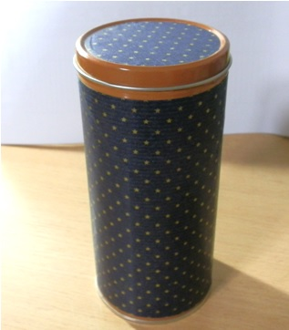
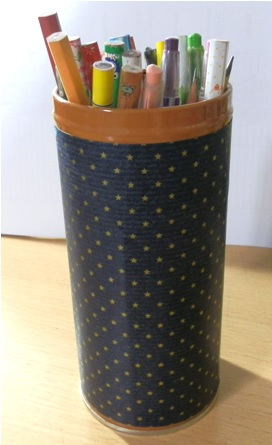
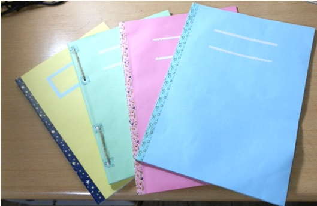
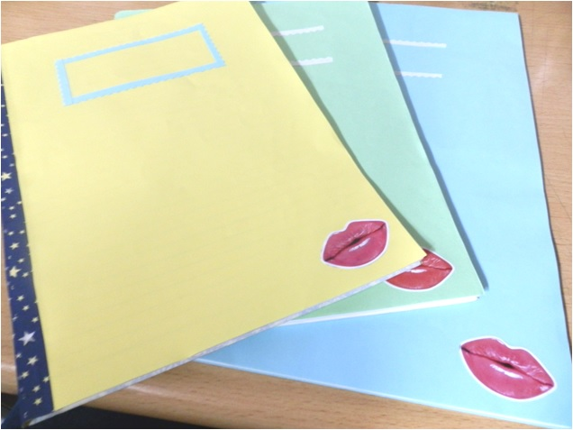
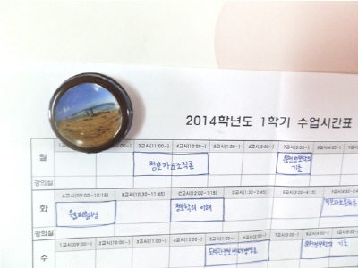

3. 기타 리폼
3-1. 연필꽂이
 
과자를 먹고 남은 통을 버리지 않고 역시 버리지 않은 포장지로 꾸몄습니다. 3-2. 공책
현재 연필과 색연필을 담은 통으로 쓰이고 있어요~
Before
학창시절에 교문 앞에서 받았던 공책들. 겉표지와 쓰지 못하는 종이들을 찢어내고 남았는데요.
 
After
집에 굴러다니던 색도화지를 공책 크기로 잘라 표지로 쓰고, 3-3. 메모홀더
스테이플러로 공책들을 찝거나 펀치로 구멍을 뚫어서
마스킹 테이프나 노끈으로 엮어 만들었습니다.
그리고 핑킹가위로 남은 색도화지를 잘라 위에 이름을 적는 칸을 두었습니다.
또 잡지에서 자른 그림을 공책 겉표지의 데코로 써서 완성했습니다!
평소에 광고가 써져 있는 자석(?)에서 자석을 빼낸 후 병뚜껑에 붙인 것입니다.
(자석을 붙이기 전에 종이를 붙인 이유는 자석에 비해 병뚜껑이 커서 자석 기능이 잘 되지 않을 것 같았기 때문입니다.)

이렇게 해서 메모홀더가 만들어지고, 중요한 메모나 종이를 같이 붙이면 됩니다~!
오진영. (2011). 리폼 팩토리. 서울: 미디어윌.
▲▲▲